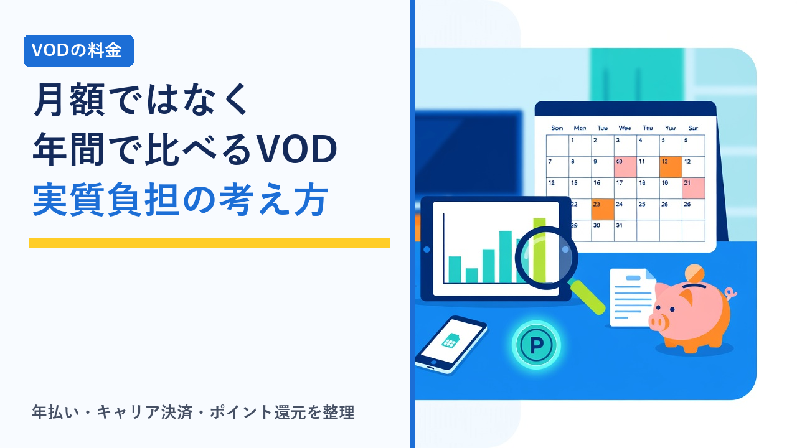

VODの月額料金を年間で比べる：年払い・キャリア決済・ポイント還元まで含めた実質負担の考え方
2026-09-17 更新

動画配信サービス（VOD）を選ぶとき、多くの人が最初に見るのは「月額いくらか」です。ただ、実際に1年使ったときの負担は、月額の表示価格だけでは決まりません。年払いプランの割引、通信キャリアやセットプランの特典、月額に付いてくるポイント、無料体験期間の長さ、途中解約の扱いなど、支払い方法や契約形態によって「実質的に払う金額」は変わります。この記事では、VODの料金を月額ではなく年間の実質負担で比べるための考え方と、支払い方法ごとの違いや確認ポイントを客観的に整理します。特定のサービスの金額を断定するものではなく、各社に共通する仕組みを扱います。
「月額」と「年間の実質負担」がずれる理由
同じ月額表示のサービスでも、1年間の支払総額や実質的な負担が変わる要因は、大きく分けて次の4つです。
① 契約単位の違い
月ごとに更新する月額プランと、1年分をまとめて払う年払いプランでは、月あたりの単価が変わります。年払いは割引される代わりに、途中でやめても返金されないのが一般的です。
② 申し込み経路の違い
公式サイト・アプリ内課金・通信キャリア経由では、同じサービスでも料金や特典が異なることがあります。アプリ内課金は手数料の関係で公式より高い設定になっている場合もあります。
③ 還元の有無
月額料金の一部がポイントとして戻ってくるサービスがあります。ポイントの用途が限定されているため、使い切れるかどうかで実質負担が変わります。
④ 無料期間と課金開始日
無料体験の長さと、課金が始まる日の数え方（登録日基準か月末基準か）で、初年度の支払回数が変わります。
つまり「月額×12」で単純に比べると、年払いで安くなる人、ポイントを使い切って実質的に安くなる人、逆に途中解約や使わないポイントで割高になる人の差が見えません。以下では、それぞれの要因を順に見ていきます。
年払いプランの仕組みと向き不向き
年払い（年額プラン）は、12か月分をまとめて前払いすることで、月額プランを12回払うよりも総額が抑えられる形が一般的です。割引の幅はサービスによって異なりますが、「月額プランの1〜2か月分程度が安くなる」設計が多く見られます。一方で、契約期間中に解約しても残りの期間分は返金されない、途中で下位プランへ変更できない、といった制約が付くのが通常です。
| 比較項目 | 月額プラン | 年払いプラン |
|---|---|---|
| 支払いのタイミング | 毎月（更新日ごと） | 契約時に1年分を一括 |
| 月あたりの単価 | 表示どおり | 月額プランより低くなるのが一般的 |
| 途中解約 | 次回更新日までで止められる | 解約しても期間終了まで課金済み、返金なしが一般的 |
| プラン変更 | 更新日ごとに変えやすい | 期間中は変更できない、または上位変更のみのことがある |
| 無料体験との関係 | 無料期間終了後に月額へ移行 | 無料期間が付かない、または年払いは対象外のことがある |
| 向いている人 | 短期間で試したい、他社と併用・切り替えをしたい | 1年以上使う見込みが高く、見たい作品が集中している |
上の表は一般的な設計を整理したものです。年払いの割引率・返金の可否・無料体験の適用条件はサービスごとに異なります。契約前に各公式サイトの料金ページと利用規約でご確認ください。
年払いで得をするかどうかの分かれ目は、「1年のうち使わない月がどれくらいあるか」です。たとえば年払いの割引が月額換算で1.5か月分なら、月額プランで年に2か月以上解約している人は月額のほうが安くなります。見たい作品のあるときだけ契約する使い方が合っているなら、割引率だけで年払いを選ばないほうが無難です。無料体験を順番に試す使い方との相性はVODの無料体験を「はしご」する前に知っておきたい再登録・再体験のルールでも整理しています。
申し込み経路で変わる料金と特典
同じサービスでも、どこから申し込むかによって料金・特典・解約窓口が変わることがあります。年間の負担を比べるときは、この経路の違いもあわせて見ておく必要があります。
| 申し込み経路 | 料金・特典の傾向 | 年間負担で注意する点 |
|---|---|---|
| 公式サイトから直接 | 標準の料金。キャンペーンや年払いプランが用意されていることが多い | 基準として比べやすい。解約もマイページで完結する |
| スマートフォンのアプリ内課金 | ストア手数料の影響で公式より高い、または年払いが選べない場合がある | 同じサービスでも月額が違うことがある。解約はストアの購読管理から |
| 通信キャリア経由・セットプラン | 回線契約とセットで割引や一定期間無料が付くことがある | 回線を解約・変更すると割引が外れる。VOD単体の解約窓口がキャリア側になる |
| 他サービスとのバンドル（複数VODのセット等） | 2つ以上をまとめて契約すると単体より安くなる | 片方を使わなくなっても総額は変わらない。セットの中身が変更されることがある |
| ポイントサイト・提携キャンペーン経由 | 登録時に外部ポイントが付与される | 付与条件に最低利用期間があることが多く、早期解約だと特典が無効になる |
特に見落としやすいのが、キャリアやセットプランの「割引が付く条件」です。回線とセットで安くなる場合、割引はVODの契約ではなく回線側の契約条件として設定されていることがあり、機種変更や回線の乗り換えで条件が変わると、VOD側の料金が想定と違ってくることがあります。年間で比べるなら「その割引が1年間続く前提で問題ないか」を先に確認しておくと安全です。
ポイント還元は「使い切れる分」だけ差し引く
月額料金の一部が毎月ポイントとして付与されるサービスでは、そのポイントを新作レンタルや電子書籍の購入などに使えます。使い切れる人にとっては実質的な負担が下がるため、料金比較のときに「月額からポイント分を引いた金額」で考える人もいます。ただし、この考え方が成り立つのは次の条件を満たすときだけです。
- 毎月ポイントを使う用途がある：見放題作品しか見ない人には、ポイントは使い道がなく実質価値はほぼゼロになります。
- 有効期限内に使い切れる：付与から一定期間で失効する設計が一般的で、ためてから大きく使う使い方には向かないことがあります。
- ポイントで払える対象が自分の見たいものと合っている：新作レンタルの対象作品や、ポイント利用ができる商品の範囲はサービスごとに決まっています。
年間で比べるときは、「1年で確実に使うポイントの額」だけを月額×12から差し引くのが現実的です。ポイント付与の仕組みや新作レンタルとの関係は映画好き向けVODの選び方：新作レンタルと見放題の違い・ポイント付与の仕組み比較で詳しく整理しています。
無料体験と課金開始日で初年度の回数が変わる
初めて登録する年は、無料体験の長さと課金の数え方で支払回数が変わります。「登録日から〇日間無料、その後は登録日を基準に毎月課金」というサービスと、「登録月は無料または日割りで、翌月1日から毎月課金」というサービスでは、同じ日に登録しても初年度の支払回数が違ってきます。月初と月末どちらに登録するかで差が出る設計もあるため、無料期間の日数だけでなく、課金開始日と更新日の決まり方を申し込み画面で確認しておくと、初年度の負担を見積もりやすくなります。各社の無料期間の有無と長さは動画配信サービスの無料体験まとめ比較にまとめています。
また、無料体験後に解約し忘れて課金が続くと、年間負担は当然ながら想定より増えます。終了日の管理方法はVODサービスの解約忘れを防ぐコツと注意点まとめを参考にしてください。
年間の実質負担を出す手順
ここまでの要素を踏まえて、サービスごとの年間負担を同じ物差しで比べる手順を整理します。
- 使う月数を見積もる：1年間ずっと使うのか、見たい作品のある数か月だけなのかを先に決めます。ここが年払いか月額かの分かれ目になります。
- 契約形態ごとの支払総額を出す：月額プランなら「月額×使う月数」、年払いなら「年額（使わない月があっても固定）」で計算します。
- 申し込み経路の差額を反映する：アプリ内課金の上乗せ、キャリア・セット割引の額を、それが1年間続く前提で加減します。
- 確実に使い切れるポイント分だけを差し引く：使う予定のないポイントは計算に入れません。
- 初年度は無料期間と課金開始日を反映する：無料期間の分だけ支払回数が減ることを考慮します。2年目以降は無料期間がないため、継続する場合は2年目の額でも比べておくと判断がぶれません。
この手順で出した「年間の実質負担」を並べると、月額表示だけでは見えなかった差が分かります。たとえば月額が少し高くても、年払い割引とポイントを使い切れる人にとっては安くなることがあり、逆に月額が安く見えても、アプリ内課金の上乗せや使わないポイントで実質的には差がないこともあります。
選び方のポイント
- 「月額×12」ではなく「使う月数×月額」または「年額」で比べる：見たい作品のある期間だけ契約する使い方なら、割引率の高い年払いでも月額のほうが安くなることがあります。
- 年払いは「途中でやめても返金されない」前提で選ぶ：1年以上使う見込みがはっきりしている場合に限って検討します。初めてのサービスは月額で試してから切り替えるのが安全です。
- 申し込み経路は公式サイトを基準にし、差額があれば理由を確認する：アプリ内課金の上乗せや、キャリア割引の適用条件を把握したうえで選びます。
- ポイント還元は使い切れる分だけ価値として数える：見放題しか使わない人はポイントを比較の材料にしないほうが判断を誤りません。
- セット割引は「解約時に何が変わるか」まで見る：VODだけをやめたときに回線側の割引が外れる、セットの片方が不要になっても総額が変わらない、といった点を事前に確認します。
- 初年度と2年目以降を分けて考える：無料体験やキャンペーンは初年度限りのものが多く、継続するなら2年目の実質負担で比べるのが現実的です。
よくある質問
年払いプランは途中で解約したら返金されますか？
多くのサービスでは、年払いプランを途中で解約しても残りの期間分の返金は行われず、契約期間の終了まで視聴できる形になるのが一般的です。つまり年払いは「1年分をまとめて前払いし、その代わり単価が下がる」仕組みで、途中でやめる可能性があるなら割引分より使わない期間の支払いのほうが大きくなることがあります。返金の可否や、期間途中でのプラン変更の扱いはサービスごとに違うため、申し込み前に利用規約の解約・返金に関する項目を確認してください。
月額料金に付くポイントは、料金の割引と同じように考えていいですか？
同じとは考えないほうが安全です。ポイントは新作レンタルや電子書籍などサービス内の決まった用途にしか使えないことが多く、有効期限も設定されているため、使い道がなければ実質的な価値はゼロになります。毎月レンタルを利用する人にとっては料金の一部が戻ってくるのと近い効果がありますが、見放題作品しか見ない人には負担軽減にはなりません。自分の使い方で「毎月確実に使い切れるか」を基準に、ポイント分をどこまで差し引いて考えるかを決めるのが現実的です。
キャリア決済やセットプランで申し込むと、あとで解約しにくくなりますか？
解約できなくなるわけではありませんが、手続きの窓口が変わる点に注意が必要です。通信キャリア経由で申し込んだ場合、解約はVODのマイページではなくキャリアの契約管理画面や店頭・サポート窓口で行う形になることがあります。また、回線契約とセットになった割引は、VOD側だけを解約すると回線側の割引条件が外れる場合があります。セットプランの割引額と、解約時に影響が出る範囲を申し込み前に確認しておくと、あとから想定外の負担が出ることを避けやすくなります。